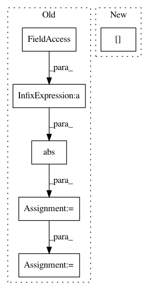

4d0e2271a42a65297d7a1735225a607b17765cf1,nab/detectors/numenta/numenta_detector.py,NumentaDetector,initialize,#NumentaDetector#,68
Before Change
def initialize(self):
calcRange = abs(self.inputMax - self.inputMin)
calcPad = calcRange * .2
self.inputMin = self.inputMin - calcPad
self.inputMax = self.inputMax + calcPad
// Load the model params JSON
paramsPath = os.path.join(os.path.split(__file__)[0],
"modelParams",
"model_params.json")
with open(paramsPath) as fp:
modelParams = json.load(fp)
self.sensorParams = modelParams["modelParams"]["sensorParams"]\
["encoders"]["value"]
// RDSE - resolution calculation
resolution = max(0.001,
(self.inputMax - self.inputMin) / \
self.sensorParams.pop("numBuckets")
)
self.sensorParams["resolution"] = resolution
self.model = ModelFactory.create(modelParams)
After Change
def initialize(self):
// Get config params, setting the RDSE resolution
modelParams = getScalarMetricWithTimeOfDayAnomalyParams(
self.dataSet.data["value"], minResolution=0.001)["modelConfig"]
self._setupEncoderParams(
modelParams["modelParams"]["sensorParams"]["encoders"])
In pattern: SUPERPATTERN
Frequency: 3
Non-data size: 6
Instances
Project Name: numenta/NAB
Commit Name: 4d0e2271a42a65297d7a1735225a607b17765cf1
Time: 2016-03-09
Author: alexdlavin@gmail.com
File Name: nab/detectors/numenta/numenta_detector.py
Class Name: NumentaDetector
Method Name: initialize
Project Name: scikit-learn-contrib/imbalanced-learn
Commit Name: aa6af82f458acf3f853e5174d34b11d319eea1c0
Time: 2016-06-17
Author: victor.dvro@gmail.com
File Name: unbalanced_dataset/under_sampling/instance_hardness_threshold.py
Class Name: InstanceHardnessThreshold
Method Name: transform
Project Name: nilmtk/nilmtk
Commit Name: b523b464d8cafe29e352981c1c6df941f205592a
Time: 2014-07-09
Author: jack-list@xlk.org.uk
File Name: nilmtk/metrics.py
Class Name:
Method Name: mean_normalized_error_power